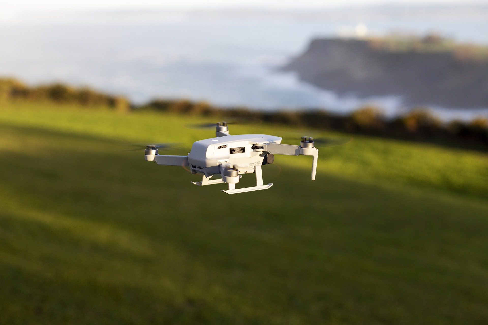

Mavic Mini
Mavic Mini gerçekten harika bir drone! Özellikle kompakt boyutları ve hafifliği sayesinde taşımak inanılmaz kolay. Yeni başlayanlar için ideal bir seçenek çünkü kullanımı çok basit ve uygulaması oldukça kullanıcı dostu. Kamera kalitesi de beni şaşırttı; 2.7K video çekimi yapabiliyor ve görüntüler oldukça net. Pil ömrü de gayet yeterli, yaklaşık 30 dakika uçuş süresi sunuyor. Tabii ki rüzgarlı havalarda biraz daha dikkatli olmak gerekiyor, ama genel olarak fiyat-performans açısından mükemmel bir cihaz. Kesinlikle tavsiye ederim!
Ali Ahmet
05.12.2024
DJI Mavic 2 Pro
DJI Mavic 2 Pro'yu yaklaşık 6 aydır kullanıyorum ve gerçekten harika bir cihaz! Hasselblad kamerasıyla 20MP çözünürlükte çekimler yapmak inanılmaz bir deneyim. Fotoğraf ve videolardaki renk doğruluğu ve detaylar çok etkileyici. Ayrıca, 4K 10-bit HDR video desteği sayesinde profesyonel düzeyde içerik üretmek mümkün.
Pil ömrü yaklaşık 30 dakika ve bu, dış çekimler için yeterli bir süre sunuyor. ActiveTrack ve Obstacle Avoidance (Engel Algılama) gibi akıllı özellikler, hem yeni başlayanlar hem de profesyoneller için büyük kolaylık sağlıyor. Tek olumsuz yanı, fiyatının biraz yüksek olması, ancak sunduğu performans ve kaliteyle bu fiyatı hak ettiğini düşünüyorum. Eğer bütçeniz uygunsa, kesinlikle öneririm!
Elena
01.01.2025
Aden A58 Pro

Aden A58 Pro, uygun fiyatlı bir drone arayanlar için gerçekten iyi bir seçenek! 4K kamera kalitesi, bu fiyat aralığında oldukça etkileyici ve hem fotoğraf hem de video çekimleri için yeterli. Özellikle yeni başlayanlar için kullanımının kolay olması büyük bir avantaj.
Pil ömrü yaklaşık 15-20 dakika civarında, bu da kısa uçuşlar için ideal. Ancak, daha uzun çekimler yapmak isteyenler için yedek batarya almayı düşünebilirsiniz. Katlanabilir tasarımı sayesinde taşınması çok kolay ve hafif bir drone.
GPS özelliği ile stabil uçuş yapabiliyor ve "eve dönüş" modu gibi özellikler, cihazı kaybetme riskini azaltıyor. Ancak rüzgarlı havalarda performansı biraz düşüyor, bu yüzden daha sakin havalarda uçurmanızı öneririm. Genel olarak fiyat/performans açısından oldukça başarılı bir ürün!
Jack Sparrow
18.12.2024